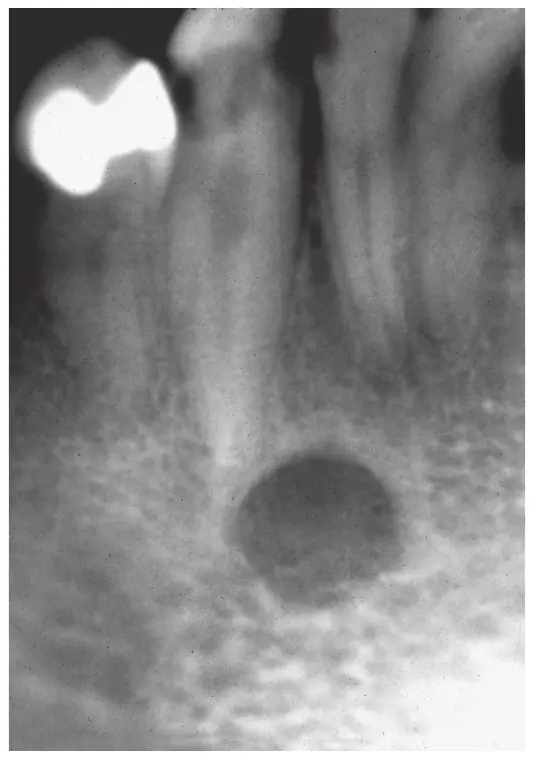

نسخه استخراجشده؛ ترجمه یا تأیید علمی انجام نشده است. وضعیت: captured
آقای ۶۲ سالهی دیابتی و پرفشار برای کشیدن یک مولر آمده است. در آزمایشش نوشته GFR برابر ۲۵ mL/min، ولی خودش میگوید «کلیهام مشکلی ندارد، هیچ علامتی ندارم». این عدد برای تو چه معنایی دارد؟
بیماری مزمن کلیه (CKD) یعنی آسیب یا افت کار کلیه که ۳ ماه یا بیشتر مانده باشد. نفرون از دست رفته جایگزین نمیشود، ولی نفرونهای باقیمانده بزرگتر میشوند و کار را جبران میکنند. برای همین بیمار تا از دست رفتن بیش از نیمی از نفرونها معمولاً علامتی ندارد. شایعترین علتها دیابت و فشار خون بالاست.
در مطب: مرحلهی ۱ تا ۳ اگر کنترلشده باشد، درمان سرپایی معمول معمولاً مشکلی ندارد. از مرحلهی ۴ به بعد پیش از درمان با پزشک بیمار مشورت کن. اگر کار کلیه رو به افت است (GFR زیر ۵۰ و در حال کاهش)، درمان انتخابی را تا مشورت و پایدار شدن بیمار عقب بینداز. بیمار دیابتی یا پرفشاری که کلیهاش هرگز بررسی نشده، یا ادم و خون در ادرار دارد، برای بررسی کلیه به پزشک ارجاع شود.
با پیشرفت بیماری، مواد نیتروژندار مثل اوره در خون جمع میشوند و BUN بالا میرود. مجموعهی علائم نارسایی کلیه را اورمی میگویند.
